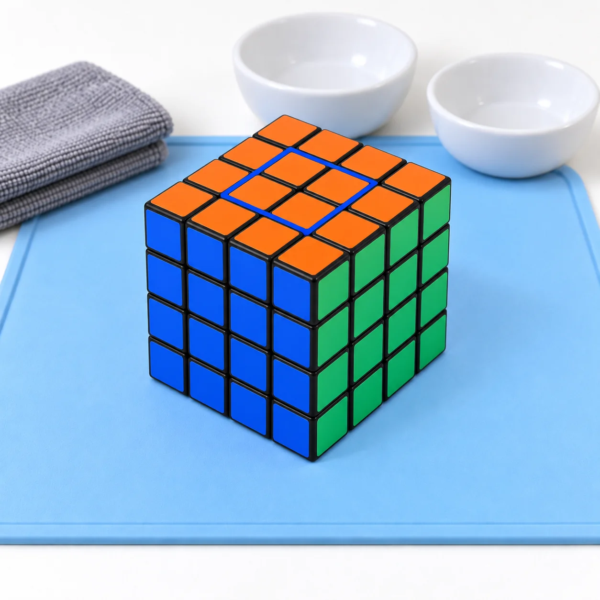
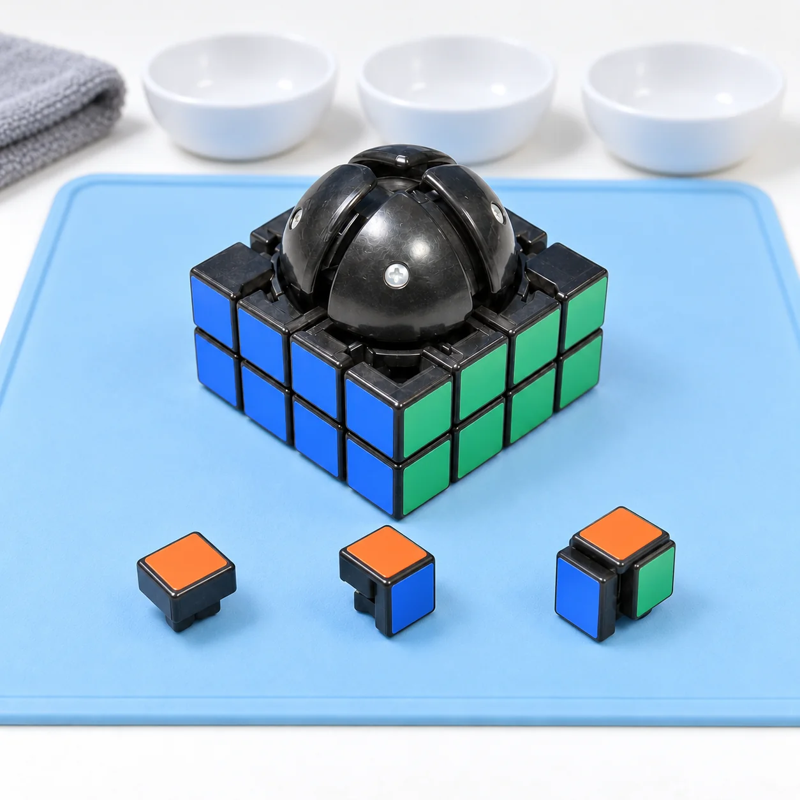
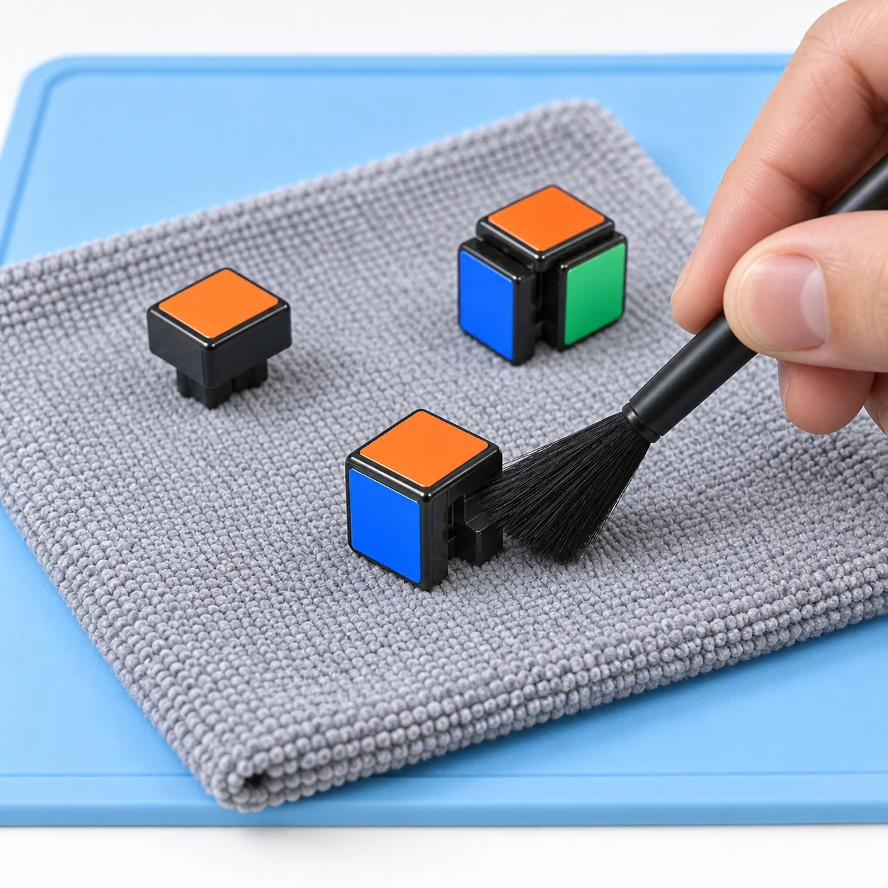
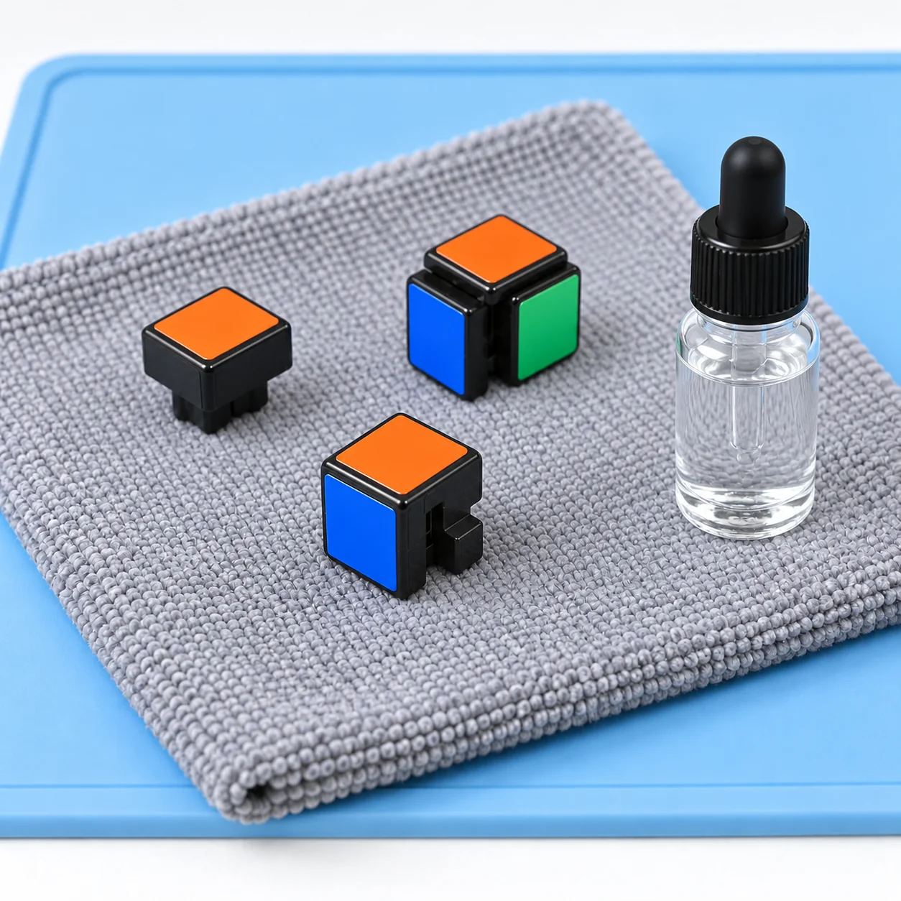
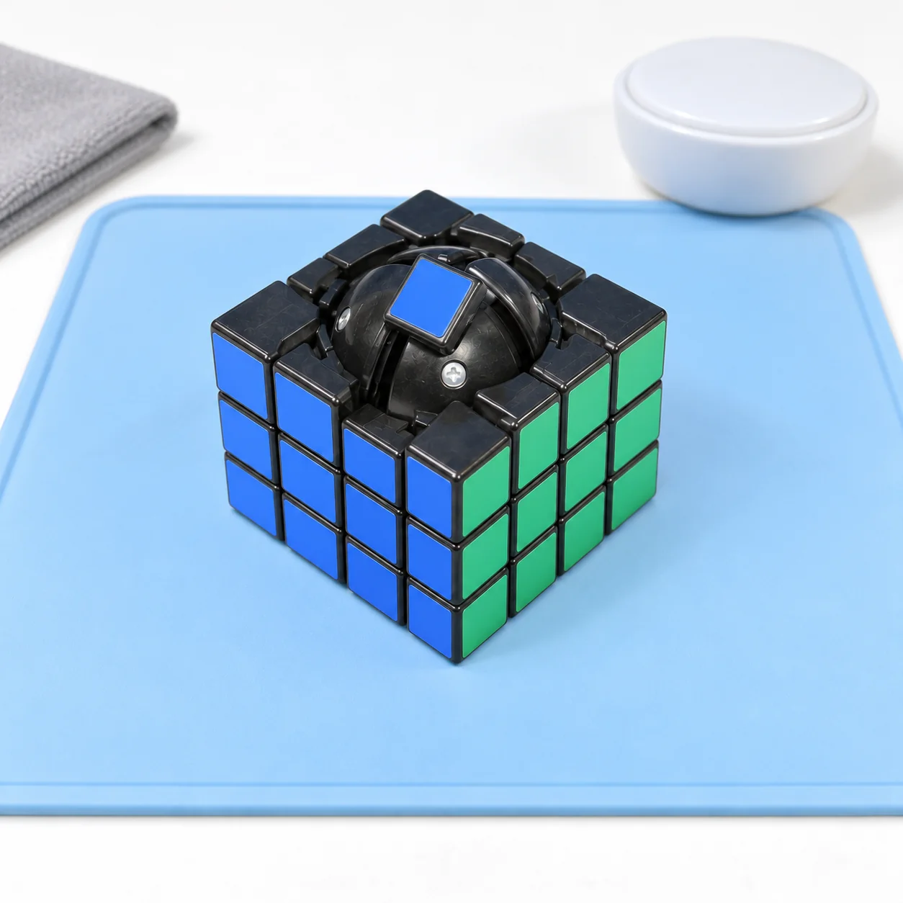
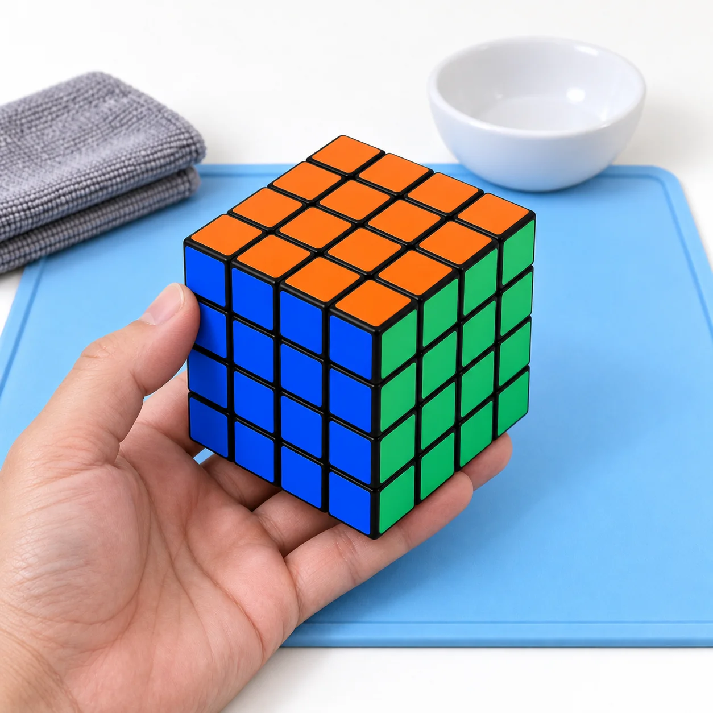

Entretiens les coins, les centres mobiles et les éléments d’arêtes de ton 4x4. Garde chaque famille de pièces organisée pour nettoyer le cube puis le remonter sans forcer.
30 à 45 minutes 6 étapes Démontage selon le modèle
Avant le premier geste
Sur ton établi.
Un espace propre et bien éclairé. Les petites pièces vont dans la coupelle.
Le mécanisme du 4x4 est plus complexe que celui du 3x3. Consulte la notice de ton modèle et ne démonte pas plus profondément que nécessaire. Le temps indiqué est une estimation, hors séchage.
Référence illustrée : schéma de montage Rubik’s 4x4 (archive 2008). Le noyau sphérique montré appartient à cette ancienne version ; ne suppose pas que ton modèle actuel possède le même mécanisme.

Repérer les centres avant le démontageIllustration générée · Référence Rubik’s 2008
Étape 1 / 6
Le démontage
Préparer le 4x4
Photos de référence + coupelles de tri
Commence avec un cube résolu. Prends plusieurs photos de ses faces et note les réglages accessibles si la notice prévoit de les modifier.
Repère les coins, les éléments d’arêtes et les centres mobiles. Prépare des espaces séparés pour chaque famille de pièces.

Centre, arête, coin : trois familles à trierIllustration générée · Référence Rubik’s 2008
Étape 2 / 6
Le démontage
Démonter progressivement les pièces
Notice du modèle + coupelles
Place les couches comme indiqué dans la notice et retire délicatement la première pièce autorisée. Continue seulement avec les pièces accessibles.
Trie les familles : un centre porte un carré de couleur, un élément d’arête en porte deux et un coin en porte trois. Les trois pièces devant le noyau illustrent ce tri, pas l’ensemble des pièces du 4x4. Prends une photo avant de toucher aux éléments internes.

Nettoyer les pièces sans les mélangerIllustration générée · Référence Rubik’s 2008
Étape 3 / 6
Le soin
Nettoyer et sécher les pièces
Chiffon microfibre + brosse souple
Enlève la poussière et les résidus de lubrifiant sur les coins, les arêtes et les centres avec un chiffon doux ou une brosse souple.
Pour les saletés tenaces, utilise un chiffon à peine humide avec un peu de savon doux seulement si la notice le permet. Garde les familles de pièces séparées.
Essuie les pièces, puis laisse-les sécher complètement avant le remontage. Nettoie les parties internes avec un chiffon sec ou un coton-tige.

Pièces sèches, produit compatible à vérifierIllustration générée · Référence Rubik’s 2008
Étape 4 / 6
Le soin
Lubrifier les zones de friction
Facultatif
Lubrifiant spécial cube compatible
Si nécessaire, sur des pièces propres et sèches, applique une petite quantité de lubrifiant spécial cube sur les surfaces de contact indiquées par le fabricant.
Vérifie sa compatibilité avec ton modèle et respecte le dosage du produit, sans remplir les espaces du mécanisme. Tu répartiras le lubrifiant en tournant les couches après le remontage.

Remonter couche après coucheIllustration générée · Référence Rubik’s 2008
Étape 5 / 6
La remise en route
Remonter le 4x4
Pièces triées + photos de référence
Replace les pièces progressivement dans l’ordre prévu par la notice, en t’aidant des photos prises au démontage.
Vérifie l’emplacement et l’orientation des centres mobiles et des éléments d’arêtes. Reconstitue les faces de couleur du cube résolu et restaure les réglages modifiés.

Le cube remonté, prêt au contrôleIllustration générée · Référence Rubik’s 2008
Étape 6 / 6
La remise en route
Contrôler toutes les couches
Ton 4x4 remonté
Tourne doucement chacune des faces, puis les couches internes du 4x4. Les mouvements répartissent aussi le lubrifiant.
Le cube doit fonctionner régulièrement, sans craquement, blocage ou jeu excessif. Ajuste un réglage uniquement selon la notice et par petites corrections.
Étape 1 sur 6
Ces six vues sont des illustrations générées en validation, basées sur le 4x4 du schéma de montage Rubik’s archivé en 2008 : elles ne sont ni des photos réelles ni des plans techniques exacts. Le noyau reste assemblé ; la vue ne montre pas comment retirer la première pièce. Le contour bleu repère les centres, et le flacon fermé ne précise ni une zone d’application ni un dosage. Pour démonter et remonter ton cube, suis la notice de ton modèle et tes propres photos.
Les bons réflexes
Questions fréquentes sur le nettoyage du 4x4.
Nettoyage, séchage et lubrification.
Peut-on nettoyer un 4x4 sans le démonter ?
Oui, pour l’extérieur et la poussière accessible : utilise un chiffon microfibre et une brosse souple. Le démontage intérieur demande davantage de repères que sur un 3x3 ; suis la notice du modèle avant de retirer une pièce.
Comment organiser les pièces pendant le démontage du 4x4 ?
Prévois une coupelle par famille : centres à un carré de couleur, éléments d’arêtes à deux carrés et coins à trois carrés. Garde séparément les petites pièces internes que la notice autorise à retirer. Prends des photos à chaque étape pour retrouver les positions au remontage.
Peut-on utiliser de l’eau pour nettoyer un 4x4 ?
Ne trempe pas le cube assemblé ni son mécanisme. Si la notice l’autorise, passe un chiffon à peine humide sur le plastique et laisse les pièces sécher complètement. Garde les parties métalliques au sec et ne trempe pas les pièces contenant des aimants.
Quel lubrifiant utiliser pour les couches du 4x4 ?
Utilise un lubrifiant spécial cube compatible avec le modèle, en petite quantité sur les surfaces de contact prévues. Après remontage, fais tourner les couches externes et internes pour le répartir. Évite les huiles domestiques et le WD-40.
Pourquoi une couche interne du 4x4 bloque-t-elle ?
Une pièce mal engagée, un réglage modifié ou des résidus peuvent gêner la rotation. Arrête le mouvement, compare le montage à tes photos et consulte la notice. Ne force pas une couche et n’ajoute pas du lubrifiant pour masquer un défaut de remontage.